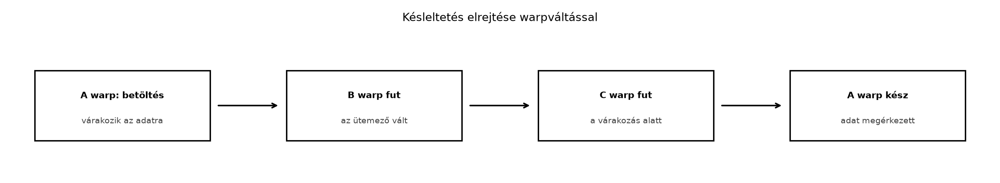

A GPU-programok teljesítményét nemcsak az határozza meg, hogy a hardver hány műveletet tud végrehajtani másodpercenként, hanem az is, hogy a végrehajtóegységek hány ciklusig állnak üresen, miközben egyetlen utasítás eredményére várnak. Ezt a várakozási időt nevezzük késleltetésnek. A GPU-k tervezésének egyik alapelve, hogy a késleltetést nem elsősorban csökkenteni próbálják, hanem elrejteni: amíg egy utasítás eredménye nem áll rendelkezésre, a hardver más, független utasításokat hajt végre.
Ebben az alfejezetben a késleltetés elrejtésének két fő mechanizmusát vizsgáljuk: a warp-szintű párhuzamosságot, valamint az egy szálon belüli utasításszintű párhuzamosságot. A fogalmakra közvetlenül épít a következő, 12.4 alfejezet, amely az occupancy optimalizálásával foglalkozik.

A GPU-n futó kódban kétféle késleltetés dominál. A memória-késleltetés a globális memóriaelérés ideje: egy globális load a L2 cache vagy a DRAM (HBM/GDDR) távolsága miatt több száz ciklust is igénybe vehet. Az utasításkésleltetés ennél rövidebb, de szintén fontos: például egy lebegőpontos FMA utasítás eredményére a következő, attól függő utasításnak néhány ciklust várnia kell.
A késleltetés elrejtésének általános összefüggése megfogalmazható a következő módon:
ahol a szükséges, egymástól független, folyamatban lévő műveletek száma, a hatékony késleltetés ciklusokban, pedig a maximális átbocsátóképesség műveletek per ciklus mértékegységben. Ha túl kicsi, az execution pipeline lyukakat kap, a hardver kihasználtsága pedig csökken.
Memóriaesetben nem feltétlenül utasításokat, hanem folyamatban lévő memóriaeléréseket vagy azok byte-összegét jelenti. A gondolat azonban ugyanaz: a memória-pipeline telítéséhez annyi memóriaterhelést kell „úton lenni” hagyni, amennyit a késleltetés és a sávszélesség szorzata megkövetel.
A gyakorlatban ezt két szinten lehet megvalósítani:
Mindkettő a értéket növeli, ezért egymás helyettesítői is lehetnek, de más erőforráskövetkezménnyel.
A warp-szintű párhuzamosság a GPU-végrehajtás legalapvetőbb elrejtési mechanizmusa. Egy SM-ben több warp ütemező működik; minden ütemező órajelenként jellemzően egy warp-utasítást tud kiadni valamelyik futásra jogosult warpnak. Amikor egy warp memóriaelérésre vár, az adat megérkezéséig nem futásra jogosult, ezért az ütemező más warpot választ.
Tegyük fel, hogy a globális memória késleltetése 400 ciklus, és minden warp egy 128 byte-os, 32 szál által végrehajtott lebegőpontos loadot generál. Ha csak egy warp lenne az SM-ben, akkor az ütemező kiadna egy loadot, majd 400 cikluson keresztül nem lenne más elvégezhető munka. A memória-pipeline tehát szinte üresen járna.
A szükséges warp-szám memória-kötött feladatokra közelíthető a következő képlettel:
ahol a memória-késleltetés ciklusban, a fenntartható memória-sávszélesség byte/ciklusban, pedig az egy warp által kibocsátott load byte-száma. Egy tipikus illusztratív esetben ciklus, byte/ciklus, byte, így
warp összesen. Ha a GPU-nak 60 SM-je van, ez SM-enként körülbelül 31 aktív warpot jelent. Ha egy SM legfeljebb 64 warpot tud fogadni, akkor ez körülbelül 50%-os occupancy-t követel. Az alacsonyabb occupancy tehát ebben a memória-kötött helyzetben sávszélesség-csökkenést okoz.
A valóságban a pontos számot befolyásolják a cache találatok, a memória–utánpótlás korlátai, a memóriarendszerben folyamatban lévő kérések maximális száma és az, hogy a warp éppen hány loadot tud egyszerre kiadni. A mérnöki szemléletnek azonban nem kell tökéletesen pontos előrejelzést adnia: elég meghatározni, hogy a vizsgált kernel memória-kötött-e, és hogy van-e elegendő aktív warp az SM-en.
A WLP növelésének legegyszerűbb módja a regiszter- és shared-memory-nyomás csökkentése, hogy az SM több blokkot tudjon fogadni. A dinamikus shared memory méretének növelésével viszont szándékosan csökkenthető az occupancy, amit a laborban mérési eszközként használunk.
Az ILP ugyanannak a warpnak az utasításfolyamán belül jelent függetlenséget. Ha egy szálban a következő utasítás az előző eredményétől függ, akkor az ütemező nem tudja kiadni, amíg az eredmény el nem készül. Ha viszont a kódban több független lánc van, az ütemező az egyik lánc utasítását kiadhatja, miközben a másik lánc késleltetését várja.
Tekintsünk egy tipikus FMA-láncot:
float acc = 0.0f;
for (int i = 0; i < n; ++i) {
acc = a * acc + b;
}Itt minden FMA az előző FMA eredményét használja, ezért a lánc hossza mentén nem lehet átfedés. Ha egy FMA késleltetése ciklus, akkor a függő láncban csak minden ciklusban lehet egy FMA-t kiadni. Ha , akkor egy ilyen warp az FMA-pipeline átbocsátóképességének legfeljebb negyedét használja ki.
A megoldás több független lánc bevezetése:
float acc0 = 0.0f, acc1 = 0.0f, acc2 = 0.0f, acc3 = 0.0f;
for (int i = 0; i < n; i += 4) {
acc0 = a0 * acc0 + b0;
acc1 = a1 * acc1 + b1;
acc2 = a2 * acc2 + b2;
acc3 = a3 * acc3 + b3;
}Ebben a példában az ILP értéke 4, mert négy független FMA áll rendelkezésre. Ha az FMA-késleltetés 4 ciklus, akkor elvileg egyetlen warp is képes ciklusonként egy FMA-t kiadni, feltéve, hogy a regiszterek rendelkezésre állnak.
Ugyanez a gondolat memóriaterhelésre is alkalmazható. A ciklusonkénti egyetlen akkumulátor helyett négy akkumulátor, valamint négy egymástól független load engedi, hogy egyszerre több memóriaterhelés legyen folyamatban. Ezt hívják memória-szintű párhuzamosságnak, amely az ILP memóriaváltozata.
A WLP és az ILP közötti kapcsolat közelítően így írható fel:
ahol az egy ütemezőre jutó, futásra jogosult aktív warpok száma, az ILP pedig a független utasításláncok számát jelenti. A szükséges elrejtési kapacitás a késleltetés és az átbocsátóképesség szorzata. Ha az ILP nő, kevesebb aktív warp is elegendő lehet; ha az ILP kicsi, a hardvernek több warpra van szüksége.
Az ILP növelésének ára a megnövekedett regiszterfogyasztás. Minden független akkumulátor legalább egy regisztert foglal. Ha az ILP-t túlzottan növeljük, a regiszterek elfogynak, a fordító regiszter-spillt generál, és az occupancy zuhan. Ezért a gyakorlatban az ILP-t és az occupancy-t együtt kell hangolni.
A CUDA-kódokban a leggyakrabban az alábbi mintákat érdemes alkalmazni.
A grid-stride loop már ismert forma: a grid méretét a teljes adathalmaznál kisebbre választjuk, és minden szál a saját indexéből indulva, a teljes grid-stride-mal lépkedve dolgozza fel az adatokat. A következő kód egyszerre növeli a memória-szintű párhuzamosságot és csökkenti a ciklus-ellenőrzések számát:
__global__ void sum4(const float* __restrict__ x, float* __restrict__ out, size_t n) {
float s0 = 0.0f, s1 = 0.0f, s2 = 0.0f, s3 = 0.0f;
size_t i = (size_t)blockIdx.x * blockDim.x + threadIdx.x;
size_t stride = (size_t)gridDim.x * blockDim.x;
for (; i + 3 * stride < n; i += 4 * stride) {
s0 += x[i];
s1 += x[i + stride];
s2 += x[i + 2 * stride];
s3 += x[i + 3 * stride];
}
// Farok: a maradék elemek (legfeljebb 3 elem szálanként), ha n nem
// 4 * stride többszöröse; így minden elem pontosan egyszer szerepel.
for (; i < n; i += stride) {
s0 += x[i];
}
float sum = (s0 + s1) + (s2 + s3);
out[(size_t)blockIdx.x * blockDim.x + threadIdx.x] = sum; // szálankénti részeredmény
}Itt a négy betöltés független, így a memória-pipeline-ban egyszerre több kérés lehet folyamatban. A végső összegzést a ciklus után egyszer végezzük el.
#pragma unrollA CUDA C++ fordító a #pragma unroll direktívával kérhető
a ciklus kibontására:
// s[4] = {0, 0, 0, 0}, i és stride az előző példa szerint definiált
#pragma unroll
for (int j = 0; j < 4; ++j) {
s[j] += x[i + j * stride]; // 4 független akkumulátor
}A teljes kibontás csökkenti a ciklus-adminisztrációt, és lehetővé teszi, hogy a fordító egymás mellé ütemezze a független loadokat és FMA-kat. Az unroll faktorral az is szabályozható, hogy a regiszterhasználat ne nőjön túlzottan.
__restrict__ kulcsszóA pointerek __restrict__ minősítője segít a fordítónek
feltételezni, hogy a mutatók nem aliasingolnak. Ez gyakran további
utasítás-átrendezést tesz lehetővé, ami közvetve növeli az ILP-t.
A shuffle, vote és match intrinsics lehetőséget adnak arra, hogy egy warp szálai közvetlenül cseréljenek regiszteradatot. Ezzel a memória-késleltetést kiválthatjuk, ha az adat a szomszéd szál regiszterében már rendelkezésre áll. A warp intrinsics használatakor azonban körültekintően kell kezelni a láthatóságot és a divergence-t.
A késleltetés elrejtésének tanulása során a következő hibák a leggyakoribbak.
Túl kevés aktív warp. A kernel occupancy-je a blokkméret, a regiszter- vagy shared-memory-használat miatt alacsony. A memória-kötött kernel nem éri el a sávszélességet, és a futásidő leromlik.
Függőségi lánc ILP nélkül. Egyetlen akkumulátor minden iterációban attól függ, ami az előző iterációban keletkezett. Egyetlen akkumulátorral a ciklus kibontása sem segít: a lebegőpontos összeadás és FMA sorrendjét a fordító nem rendezheti át, a lánc függő marad. Az ILP-hez több független akkumulátor kell; ennek hiányában az FMA-késleltetést csak további warpok rejthetik el.
Túlzott ILP, regiszter-spill. Minden akkumulátor
legalább egy regiszter: 16 akkumulátor 16 regiszter, ami önmagában kevés
(a szálankénti regiszterkorlát sm_80-on 255). Spill akkor jelentkezhet,
ha az akkumulátorok mellett sok betöltött érték és címváltozó is él
egyszerre, vagy ha a blokk-/launch-bounds korlát szűk; ez egyúttal
csökkenti az occupancy-t. Az ILP-t ezért a ptxas -v
kimenetével együtt hangoljuk.
Az occupancy fetisizálása. A magas occupancy nem mindig jobb. Ha egy kernel erősen számítás-kötött, néhány független FMA-lánc alacsony occupancy mellett is képes lehet telíteni az FP32-pipeline-t. A túl nagy blokkméret további szinkronizációs és cache-költséggel járhat.
A mérési konfiguráció nem rögzített. A késleltetés-elrejtési kísérletekben mindig az azonos összes munkát, precizitást és GPU-állapotot kell hasonlítani. Ha az egyik kísérletben más adatmérete vagy különböző gridmérete van, az eredmény nem értelmezhető.
A labor célja, hogy mérhetővé tegyük a WLP és az ILP hatását. A WLP-mérést memória-kötött kernelre, az ILP-mérést FMA-latencia-kötött kernelre végezzük. A kód minden CUDA API-hívást ellenőriz, warm-upot futtat, és ismételt mérésekből átlagol.
A labor futtatása előtt rögzíteni kell a következő adatokat. Az alábbi helyőrzők, a tényleges mérés előtt ki kell tölteni.
| Jellemző | Érték |
|---|---|
| GPU | <helyőrző: például NVIDIA RTX 3080 10 GB> |
| Compute capability | <helyőrző: például 8.6> |
| Driver | <helyőrző: például 535.104.05> |
| CUDA verzió | <helyőrző: például 12.4> |
| Operációs rendszer | <helyőrző: például Ubuntu 22.04> |
| Power limit | <helyőrző: például gyári> |
| ECC | <helyőrző: például letiltva> |
A labor izolált környezetben futtatandó. Ha a GPU többfelhasználós, akkor a mérés előtt meg kell győződni arról, hogy a szomszédos terhelés nem torzítja az eredményt.
A forrást latency_hiding.cu néven mentjük, és a
következő paranccsal fordítjuk:
nvcc -O3 -arch=native -std=c++17 latency_hiding.cu -o latency_hidingFuttatás:
./latency_hiding#include <cstdio>
#include <cstdlib>
#include <vector>
#include <algorithm>
#include <cuda_runtime.h>
#define CUDA_CHECK(call) \
do { \
cudaError_t err = (call); \
if (err != cudaSuccess) { \
std::fprintf(stderr, "CUDA error at %s:%d: %s\n", __FILE__, \
__LINE__, cudaGetErrorString(err)); \
std::exit(EXIT_FAILURE); \
} \
} while (0)
__global__ void k_mem_wlp(const float* __restrict__ x,
float* __restrict__ out,
size_t n) {
// A dinamikus shared memóriát csak lefoglaljuk (a launch harmadik paramétere),
// hogy csökkentsük az SM-enként aktív blokkok számát; a kernel nem használja,
// ezért 0 bájtos foglalásnál sincs határon túli írás.
size_t idx = blockIdx.x * blockDim.x + threadIdx.x;
size_t stride = gridDim.x * blockDim.x;
float acc = 0.0f;
#pragma unroll 1
for (size_t i = idx; i < n; i += stride) {
acc += x[i];
}
out[idx] = acc;
}
template <int ILP>
__global__ void k_arith_ilp(float* __restrict__ out, int iters, float seed) {
// A dinamikus shared memória itt is csak az occupancy szabályozására szolgál.
float a[ILP];
float b[ILP];
float c[ILP];
#pragma unroll
for (int j = 0; j < ILP; ++j) {
// Minden lánc más kezdőértéket és együtthatót kap, a `seed` futásidejű
// paraméter, így a láncok nem vonhatók össze és nem számíthatók ki fordításkor.
a[j] = seed + 0.001f * static_cast<float>(j);
b[j] = 0.9999f - 0.0001f * static_cast<float>(j);
c[j] = 0.0001f * static_cast<float>(j + 1);
}
for (int it = 0; it < iters; ++it) {
#pragma unroll
for (int j = 0; j < ILP; ++j) {
a[j] = fmaf(a[j], b[j], c[j]);
}
}
float sum = 0.0f;
#pragma unroll
for (int j = 0; j < ILP; ++j) {
sum += a[j];
}
out[blockIdx.x * blockDim.x + threadIdx.x] = sum;
}
struct Stat { float median; float iqr; };
// 5 warm-up, majd `repeats` külön eseménypárral mért futás; medián és IQR (ms)
template <typename Launcher>
Stat measure_ms(Launcher&& launch, int repeats) {
cudaEvent_t start, stop;
CUDA_CHECK(cudaEventCreate(&start));
CUDA_CHECK(cudaEventCreate(&stop));
for (int w = 0; w < 5; ++w) launch();
CUDA_CHECK(cudaGetLastError());
CUDA_CHECK(cudaDeviceSynchronize());
std::vector<float> t(repeats);
for (int i = 0; i < repeats; ++i) {
CUDA_CHECK(cudaEventRecord(start));
launch();
CUDA_CHECK(cudaEventRecord(stop));
CUDA_CHECK(cudaEventSynchronize(stop));
CUDA_CHECK(cudaGetLastError());
CUDA_CHECK(cudaEventElapsedTime(&t[i], start, stop));
}
std::sort(t.begin(), t.end());
CUDA_CHECK(cudaEventDestroy(start));
CUDA_CHECK(cudaEventDestroy(stop));
return Stat{t[repeats / 2], t[(3 * repeats) / 4] - t[repeats / 4]};
}
int main() {
int dev = 0;
CUDA_CHECK(cudaSetDevice(dev));
cudaDeviceProp prop;
CUDA_CHECK(cudaGetDeviceProperties(&prop, dev));
std::printf("GPU: %s\n", prop.name);
std::printf("compute capability: %d.%d\n", prop.major, prop.minor);
std::printf("max warps/SM: %d\n", prop.maxThreadsPerMultiProcessor / 32);
std::printf("max shared/SM: %zu bytes\n", prop.sharedMemPerMultiprocessor);
const size_t n = 64ull * 1024 * 1024;
const int block_w = 256;
const int grid_w = 1024;
float* d_in = nullptr;
float* d_out = nullptr;
CUDA_CHECK(cudaMalloc(&d_in, n * sizeof(float)));
CUDA_CHECK(cudaMalloc(&d_out,
static_cast<size_t>(grid_w) * block_w * sizeof(float)));
CUDA_CHECK(cudaMemset(d_in, 0x3f, n * sizeof(float)));
std::printf("\n== WLP: memória-kötött kernel ==\n");
std::printf("block=%d grid=%d n=%zu Mi = %.1f MiB\n",
block_w, grid_w, n,
static_cast<double>(n) * 4.0 / (1024.0 * 1024.0));
std::vector<size_t> smem_cfg = {
0, 16 * 1024, 32 * 1024, 48 * 1024, 64 * 1024,
static_cast<size_t>(prop.sharedMemPerBlockOptin)
};
// 48 KiB feletti dinamikus shared memoryhoz opt-in kell
CUDA_CHECK(cudaFuncSetAttribute(k_mem_wlp,
cudaFuncAttributeMaxDynamicSharedMemorySize,
static_cast<int>(prop.sharedMemPerBlockOptin)));
for (size_t smem : smem_cfg) {
if (smem > static_cast<size_t>(prop.sharedMemPerBlockOptin)) {
continue;
}
int occ_blocks = 0;
CUDA_CHECK(cudaOccupancyMaxActiveBlocksPerMultiprocessor(
&occ_blocks, k_mem_wlp, block_w, smem));
int warps_per_sm = occ_blocks * (block_w / 32);
Stat st = measure_ms([&] {
k_mem_wlp<<<grid_w, block_w, smem>>>(d_in, d_out, n);
}, 20);
float ms = st.median;
CUDA_CHECK(cudaDeviceSynchronize());
double GBs = static_cast<double>(n) * sizeof(float) /
(static_cast<double>(ms) * 1e-3) / 1e9;
std::printf(
"smem=%5zu B | occ_blocks=%2d | warps/SM=%2d | "
"ms(medián)=%.3f, IQR=%.3f | eff. sávsz.=%.1f GB/s\n",
smem, occ_blocks, warps_per_sm, ms, st.iqr, GBs);
}
std::printf("\n== ILP: FMA-latencia-kötött kernel ==\n");
const int block_i = 128;
const int grid_i = 512;
const int iters = 200000;
const size_t smem_low = 48 * 1024;
const size_t smem_high = 0;
float* d_out_i = nullptr;
CUDA_CHECK(cudaMalloc(
&d_out_i,
static_cast<size_t>(grid_i) * block_i * sizeof(float)));
for (int ilp : {1, 2, 4, 8, 16}) {
long long total_fma =
static_cast<long long>(grid_i) * block_i * iters * ilp;
double gflop = static_cast<double>(total_fma) * 2.0 / 1e9;
auto print_case = [&](size_t smem, const char* label) {
if (smem > static_cast<size_t>(prop.sharedMemPerBlockOptin)) {
return;
}
Stat st{0.0f, 0.0f};
switch (ilp) {
case 1:
st = measure_ms([&] {
k_arith_ilp<1><<<grid_i, block_i, smem>>>(d_out_i, iters, 1.0f);
}, 20);
break;
case 2:
st = measure_ms([&] {
k_arith_ilp<2><<<grid_i, block_i, smem>>>(d_out_i, iters, 1.0f);
}, 20);
break;
case 4:
st = measure_ms([&] {
k_arith_ilp<4><<<grid_i, block_i, smem>>>(d_out_i, iters, 1.0f);
}, 20);
break;
case 8:
st = measure_ms([&] {
k_arith_ilp<8><<<grid_i, block_i, smem>>>(d_out_i, iters, 1.0f);
}, 20);
break;
case 16:
st = measure_ms([&] {
k_arith_ilp<16><<<grid_i, block_i, smem>>>(d_out_i, iters, 1.0f);
}, 20);
break;
default:
return;
}
CUDA_CHECK(cudaDeviceSynchronize());
double gflops = gflop / (static_cast<double>(st.median) * 1e-3);
std::printf(
"ILP=%2d | smem=%5zu B | %-18s | ms=%.3f ± %.3f | GFLOPS=%.1f\n",
ilp, smem, label, st.median, st.iqr, gflops);
};
print_case(smem_low, "alacsony occupancy");
print_case(smem_high, "magas occupancy");
}
CUDA_CHECK(cudaFree(d_in));
CUDA_CHECK(cudaFree(d_out));
CUDA_CHECK(cudaFree(d_out_i));
return 0;
}A mérési program a CUDA eventek alapján számítja a medián futásidőt.
A WLP-részben a k_mem_wlp kernel a teljes tömböt beolvassa
és összegzi, így az effektív sávszélesség az adathalmaz méretéből és az
időből számítható. Az ILP-részben a k_arith_ilp kernel
csupa független FMA-láncot futtat, így az FMA-átbocsátóképességet
méri.
A WLP-mérésben az a várakozás, hogy 0 byte dinamikus shared memory
mellett az occupancy magas, ezért az effektív sávszélesség közel kerül a
GPU fenntartható DRAM-sávszélességéhez (HBM vagy GDDR). A shared memory
méretének növelésével az SM-enként aktív blokkok száma csökken, ezért a
warp-szám is csökken. Amíg az SM-enként úton lévő kérések száma eléri a
12.3.2 képletének küszöbét, a sávszélesség közel állandó; e küszöb alatt
(jellemzően néhány blokk/SM alatt) érezhetően csökken. A küszöb helye a
GPU sávszélességétől függ: HBM-es kártyán magasabb, GDDR-es kártyán
alacsonyabb, ezért a söprés a sharedMemPerBlockOptin
értékig megy, hogy a küszöb alatti tartományt is elérje. A pontos görbe
hardverenként eltér; ezt mérni kell, a nem futtatott laborra itt nincs
mért érték.
Az ILP-mérés alacsony occupancy mellett azt várja, hogy ILP = 1 esetén a GFLOPS-érték alacsony. Ha az FMA-késleltetés 4 ciklus, akkor ILP = 4 már alkalmas arra, hogy egyetlen warp is gyakorlatilag folyamatosan kiadjon FMA-utasításokat, ezért a teljesítmény jelentősen nő. ILP = 8 vagy 16 már legfeljebb kis további javulást ad, feltéve, hogy a regiszterhasználat nem okoz spillt. Magas occupancy mellett az ILP hatása gyengébb lehet, mert a sok warp már eleve biztosítja az elrejtést.
Az alábbi naplót a futtatás után kell kitölteni. A táblázatban a
<mért> értékek szándékosan üresek; a könyv nem mutat
be nem futtatott benchmarkot ellenőrzött eredményként.
| WLP | smem | occupancy blocks/SM | warps/SM | medián (IQR) (ms) | eff. sávszélesség GB/s |
|---|---|---|---|---|---|
| WLP | 0 | <mért> |
<mért> |
<mért> |
<mért> |
| WLP | 16 KiB | <mért> |
<mért> |
<mért> |
<mért> |
| WLP | 32 KiB | <mért> |
<mért> |
<mért> |
<mért> |
| WLP | 48 KiB | <mért> |
<mért> |
<mért> |
<mért> |
| ILP | smem | occupancy-jelleg | medián (IQR) (ms) | GFLOPS |
|---|---|---|---|---|
| 1 | 0 | magas | <mért> |
<mért> |
| 1 | 48 KiB | alacsony | <mért> |
<mért> |
| 2 | 0 | magas | <mért> |
<mért> |
| 2 | 48 KiB | alacsony | <mért> |
<mért> |
| 4 | 0 | magas | <mért> |
<mért> |
| 4 | 48 KiB | alacsony | <mért> |
<mért> |
| 8 | 0 | magas | <mért> |
<mért> |
| 8 | 48 KiB | alacsony | <mért> |
<mért> |
| 16 | 0 | magas | <mért> |
<mért> |
| 16 | 48 KiB | alacsony | <mért> |
<mért> |
A fenti program a könyv mérési protokollját követi: 5 warm-up futás után 20 külön mért ismétlést használ, és a mediánt és az IQR-t írja ki; a táblázat időoszlopaiba ezt az alakot kell beírni.
A laborban a következő szempontokat kell ellenőrizni.
cudaOccupancyMaxActiveBlocksPerMultiprocessor által
visszaadott blokkszám és a launch-konfiguráció összhangban van.seed), így a fordító nem
vonhatja össze őket; a kimenetbe írás megakadályozza a
holtkód-eliminációt. SASS-ellenőrzés:
cuobjdump -sass latency_hiding ILP = 4 esetén négy külön
FFMA-láncot kell mutasson.Az egyik leggyakoribb hiba, hogy a WLP-mérésben a grid-stride miatt egyes szálak nagyon eltérő számú elemet dolgoznak fel. Ez a load-kiegyensúlyozatlanság miatt torzíthatja a mérést. Ezt a példában azzal kerüljük el, hogy a grid mérete osztója az adatméretnek, és minden szál ugyanannyi elemet olvas.
Egy másik gyakori hiba, hogy a mérés a kernel indítása után nem
szinkronizál, ezért a CPU-oldali időmérés nem a kernel futási idejét
mutatja. A fenti program CUDA eventeket használ, és a
measure_ms függvény az eventek segítségével vár a GPU
befejezésre.
ILP-mérésnél a túl kevés iteráció miatt a kernel futásideje a mérési
zajjal összemérhető. Az iters értéket úgy válasszuk, hogy a
leggyorsabb eset (ILP = 1, magas occupancy) is legalább 1 ms-ig fusson;
512 × 128 szálnál ez 10–40 TFLOPS-os GPU-n kb. 105–106
iteráció (kézzel levezetett becslés, nem futtatott; a laborban
iters = 200000). Ha a mért futásidő 1 ms alatti, az
iterációszámot növelni kell.
Egy SM-ben az FMA-késleltetés 4 ciklus, az FMA-átbocsátóképesség 1 utasítás/ciklus/ütemező. Hány független FMA-láncra van szükség ugyanabban a warpban ahhoz, hogy egyetlen warp is ki tudja használni ezt az átbocsátóképességet? Mi történik, ha a láncok száma ennél nagyobb?
Egy globális memóriafeladat során minden warp 128 byte-ot olvas be egy loaddal. A memória-késleltetés 500 ciklus, a fenntartható sávszélesség 800 byte/ciklus. Becsüld meg, hány warpnak kell egyszerre folyamatban lévő loaddal rendelkeznie a memória-pipeline telítéséhez. Ha a GPU-nak 80 SM-je van, és egy SM 64 warpot tud fogadni, mekkora minimális occupancy szükséges?
Egy fejlesztő növeli az ILP-t 4-ről 16-ra, de a kernelfutás lassabb lesz. Milyen erőforrásproblémát érdemes először megvizsgálni, és melyik CUDA-metrika mutatja ezt?
Megoldások (előbb próbáld meg önállóan).
ptxas -v spill store/load sorait, valamint az Nsight
Compute launch__registers_per_thread,
l1tex__t_bytes_pipe_lsu_mem_local_op_ld.sum (local memory
forgalom) és
sm__warps_active.avg.pct_of_peak_sustained_active
(occupancy) metrikáit.Ezek a kérdések a következő, 12.4 alfejezetben továbbvezetnek: ott az occupancy, a regiszterhasználat és a launch-bounds együttes optimalizálását vizsgáljuk.